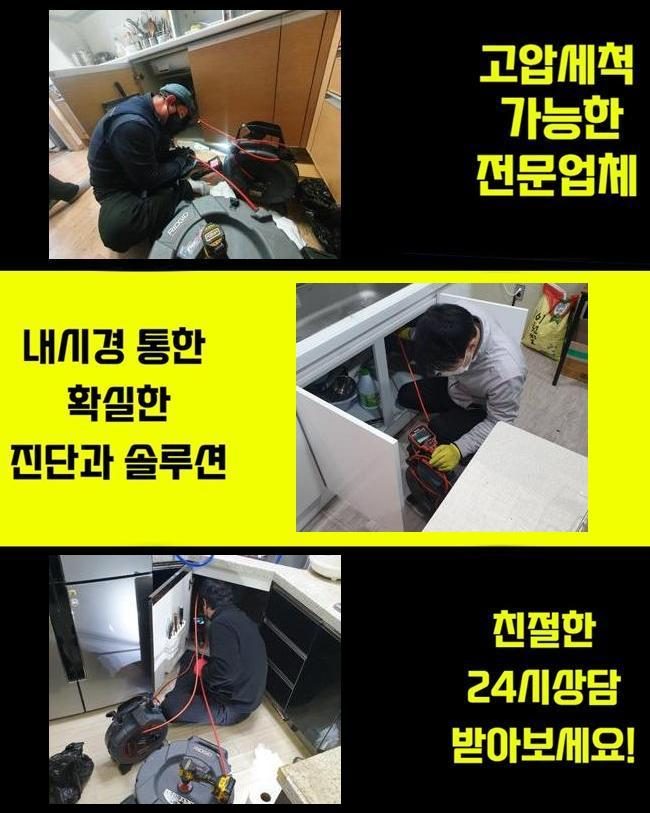
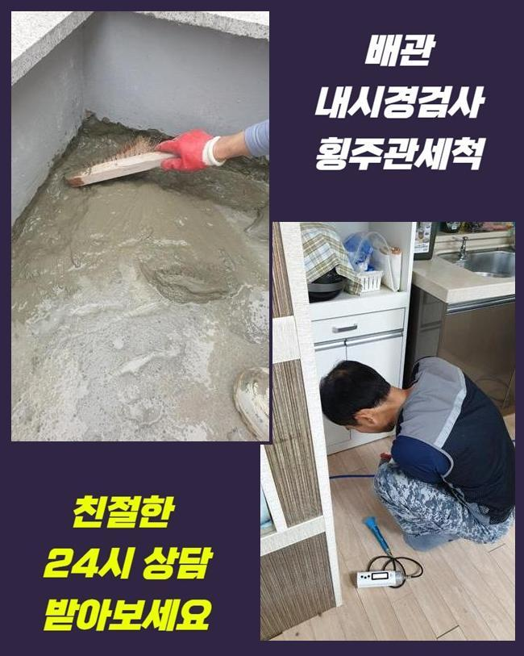
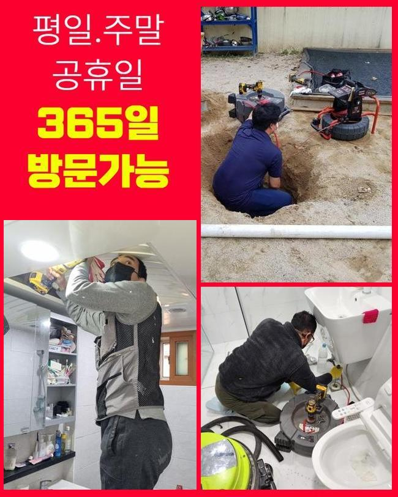
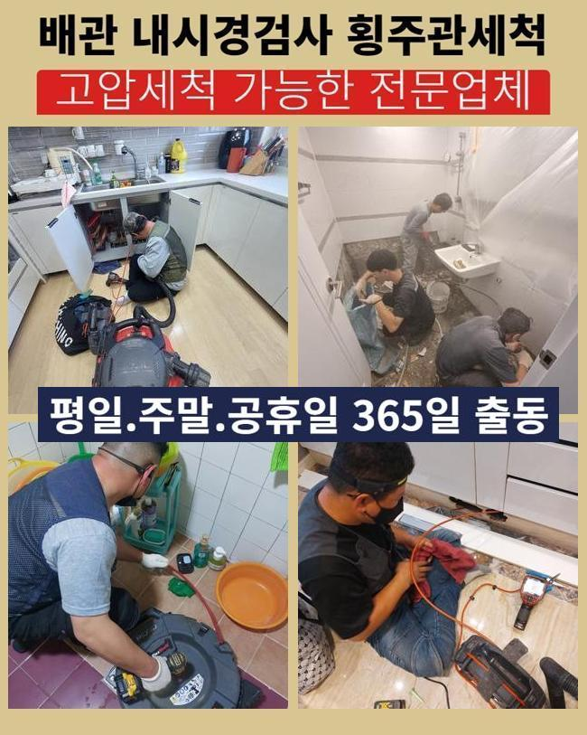
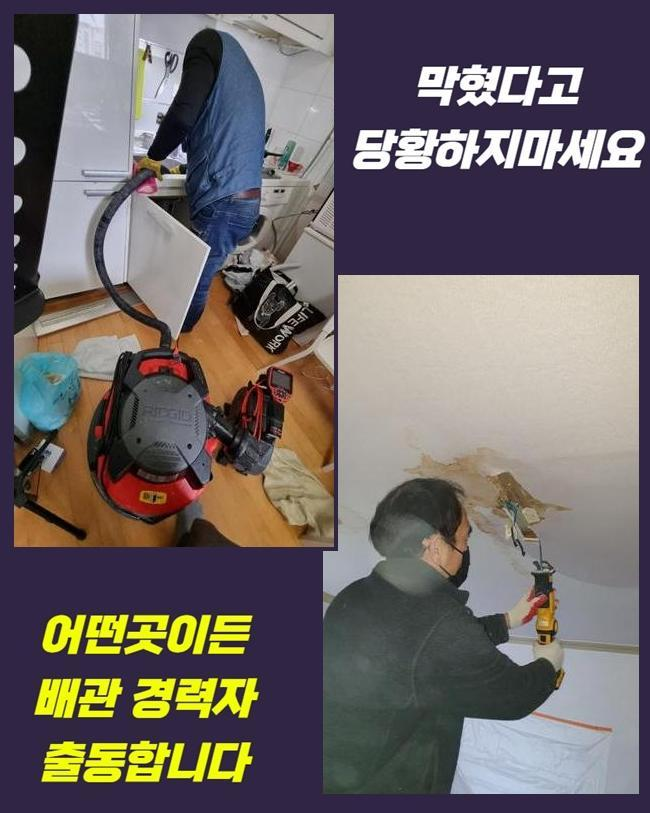
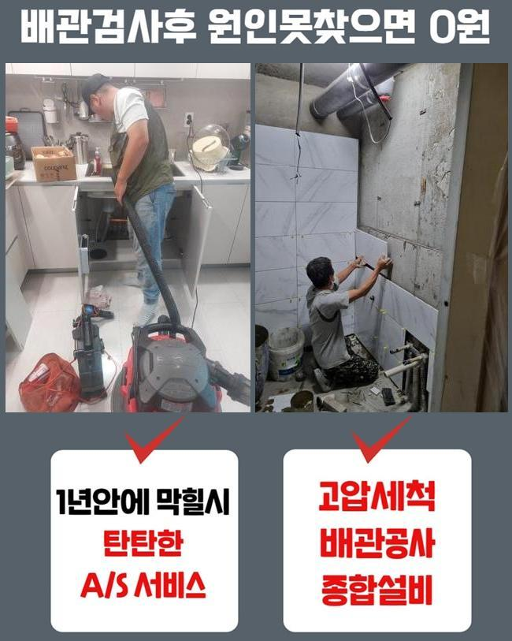
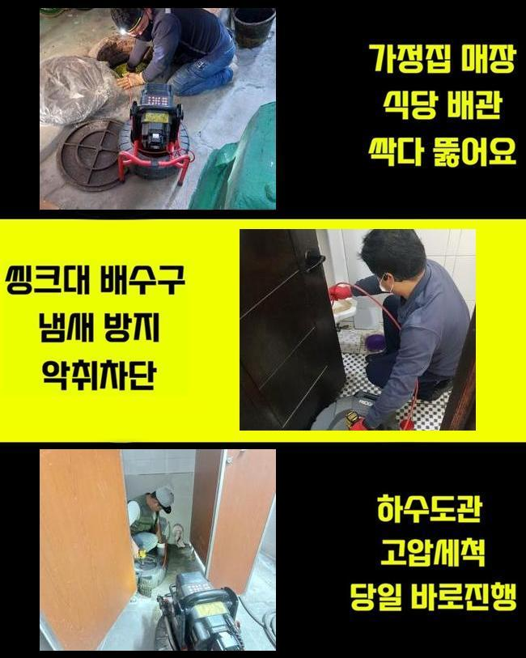

🏠 목감동대변기뚫음 하상동 하수구청소장비 통수전문
용인 변기막힘 전문 시공 후기

📋 작업 개요
- 위치: 용인
- 서비스 유형: 변기막힘, 하수구막힘, 배관막힘, 집수정막힘, 역류해결, 뚫는업체, 배관청소, 설비공사
- 작업 일시: 2025. 1. 23. 11:12
- 업체명: 하수구수사대 (010-5615-2118)
🔍 문제 상황
목감동대변기뚫음 하상동 하수구청소장비 통수전문
공동 주택 내부에 설치 되어있는 하수시설을 점검하지 않는 경우엔 이물질이 계속해서 층을 이루면서 배수라인의 이상이 나타날 경우가 많아져요
그렇기때문에 연식이 많이 되었다면 전문업체에 의뢰하셔서 하수설비의 이상을 미리 파악하는게 안전합니다
어제 저녁에 사례자님께서 배수구가 막혀서 문제가 생겼다고 연락을 주셨어요
이번 현장은 조금 외진 곳의 주택이였고 집근처에 규모있는 캠핑장도 영업을 하는 상황이였어요
집을 지은지 그리 오래된게 아닌데 외부로 역류문제가 반복적으로 일어난다고 설명 해주셨습니다
살펴보니 창고안에 설치된 집수정에서 밖에 위치해있는 정화조쪽으로 유입되는 형태였습니다
정화조 거리가 너무 멀어서 이곳에 설치 하셨다고 말씀하셨어요
고객님께 문제부위를 발견해도 점검구가 보이지 않는다면 좀 더 시간이 많이 걸린다고 안내 해드렸고 동의를 해주셨습니다
집수정에서 내시경기기를 넣었으나 오염물질이 꽉 막혀있어서 진행방향으로 라인이 들어가질 않았어요

🔎 원인 분석
💡 전문가 진단: 정밀 진단 장비를 사용하여 슬러지의 고착 여부를 판명하고 타격/세척 작업을 실시했습니다.
침전물이 가득 차있는 모습을 고객분에게도 보여드리며 설명 해드렸어요
샤프트기기로 수리를 진행했습니다
기기에 머리카락 외에도 물티슈등이 끝도없이 엉켜서 빠져나왔어요
일반적인 역류를 발생시키는 막힘요소는 머리카락이나 물티슈등이 가장 많아요
고객분께 모두 거름망을 통해 버리시라고 말씀 드렸어요
물티슈같은 것은 화학적인 성분으로 일반 휴지처럼 종이가 아니라 플라스틱이므로 액체에 녹는게 아닙니다
요새 물에 녹는 물티슈도 있다고는 하지만 그것 또한 뭉쳐서 사용하면 하수시설에 이상이 생기면서 역류상황이 벌어지게 됩니다
배수라인 안쪽에 있는 이물질들과 엉켜 덩어리지면서 막힘문제를 일으킵니다
사용자께서 물티슈같은 오염물질을 분리해서 배출하시기 바랍니다
배수관은 오수를 다루는 시설이라는걸 기억하시고 오염물질은 분리배출을 원칙으로 하시길 바랍니다

🔧 작업 과정
이후엔 창고쪽으로 가서 내시경 작업들을 마저합니다
하수라인이 길게 설치되어 있어서 내시경기기계가 끝쪽까지 들어갈 수가 없어서 쏜드기계를 활용했습니다
막혀있는 부분에 계속해서 침전물 제거하는 작업들을 계속했어요
이번에도 물티슈와 머리카락이 계속해서 올라오는걸 보시고 사례자님께서도 중대한 상황이라는걸 아시고 놀라셨습니다
저희들에게 동일한 문제가 일어나지 않게 할 수 있는 예방법을 질문 해주셔서 꼼꼼하게 답변 해드렸습니다
대부분은 일상에서 쉽게 이물질들이 흘러가면 자연스레 물과 함께 배출된다고 알고 계시지만 구배상 환경요건이 좋지 않은 경우에 안쪽으로 침전물이 형성되므로 작은 쓰레기나 음식에서 나오는 기름을 버리시면 안돼요
내시경장비를 재투입하여 남은 찌꺼기는 없는지 다시 한번 살펴보았습니다
정화조부부과 집수정부분 완벽하게 체크를 했고 남은 불순물 하나없이 깔끔한 배관이 확인 되었어요
고객분에게도 보여드렸더니 다행이라고 하시며 안심을 하셨어요
일반적으로 산성약품을 통해서 간단히 뚫을 수 있다고 알고있는 분들도 있지만서도 그런 방법은 옳지 않아요
고객분께서 이용을 하시면서 머리카락등이 오염물질을 따로 처리하고 집의 사용년수가 오래 되셨다면 사전에 업체를 통해서 정기적인 검사를 진행하시는게 좋습니다
사소한 문제를 방치하시는 경우엔 역류사태까지 진행되며 대규모 공사를 하게되어 금액적인 부담이 커지게 돼요
이처럼 배수관 문제를 방치하시면 비용적인 면에서 고객님의 부담감이 더해진다는 것을 알고 계셔야 합니다
작업이 종료된 후에도 주변의 오염을 정리하고 청소 해드렸어요
오염된 물에서 부패된 냄새가 났으므로 전용세제를 뿌려두고 수전에 연결하여 청소작업까지 마무리했어요
기본적으로 주변까지 저희 전문가들이 청소 해드리는 경우는 드물어요


✅ 작업 완료
작업한 현장의 경우 냄새가 매우 심한편이라서 지나칠 수가 없었습니다
저희 전문 기술진은 배수구의 머리카락등은 물론이고 하수설비 내부의 불순물을 꺼내고 물의 흐름 상태가 제대로 되는 상황까지 최종점검을 꼭 진행해요
고객분께서 저희 전문 기술진을 신뢰하여 의뢰를 주실 수 있게 최선을 다하며 비슷한 문제로 자세한 사항을 상담 받고자 하시다면 편하게 문의 주시기 바랍니다
배수관 문제를 비용적인 부분을 최소화한 방식으로 해결하시려면 빠른대응이 최선이라는 것을 잊지말고 미리 예방하셔야 해요
일상에서 이와같은 문제가 일어나지 않으면 좋겠으나 발생했다면 조속히 전문진에게 의뢰를 하시기 바랍니다




⚠️ 하수구 배관 막힘 예방 및 관리 가이드
- ✅ 머리카락, 비닐, 물티슈 등 물에 분해되지 않는 이물질은 하수구 유입을 절대 금지해 주세요.
- ✅ 하수구 거름망을 씌우고 모여진 이물질은 주기적으로 쓰레기통에 바로 비워주셔야 합니다.
- ✅ 배관 노후가 심할 경우 이물질이 더 쉽게 걸리므로 주기적인 배관 세척(고압세척 등)을 권장합니다.
- ✅ 작업 후 1년 이내 재발 시 하수구수사대에서 무상 A/S 보증 서비스를 제공합니다.
💡 핵심 정리
- 확실한 장비 작업(내시경 점검 및 샤프트 스케일링)으로 원인을 뿌리 뽑습니다.
- 작업 후 1년 이내에 동일한 부위 재발 시 100% 무상 A/S 서비스를 보장합니다.
- 서울 · 경기 · 인천 전 지역에 24시간 언제든 긴급 출동할 수 있도록 항시 대기 중입니다.
❓ 자주 묻는 질문 (FAQ)
🚨 용인 변기막힘 문제로 고민이신가요?
정확한 원인 진단과 확실한 시공으로 재발 없는 해결을 약속드립니다.
24시간 긴급 출동 | 서울 · 경기 · 인천 전지역 | 1년 내 재발 시 무상 A/S